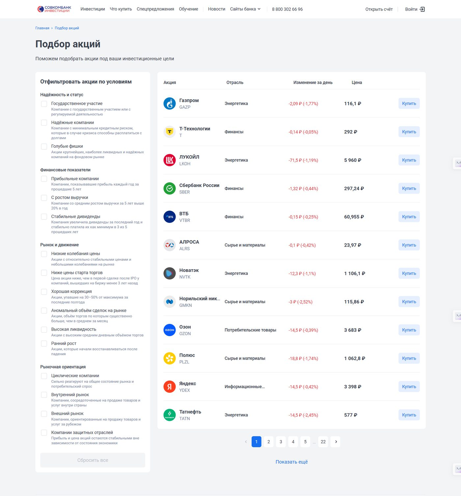

Подбор акций: тексты для редизайна, после которого до расчёта портфеля стали доходить вдвое чаще
Задача
Сервис помогал частным инвесторам отобрать акции по фильтрам и собрать из них портфель. Назывался он «Pro-фильтры». До расчёта портфеля доходили 2,75% тех, кто открыл сервис, до заявки на покупку — никто. По итогам исследования бизнес принял компромиссное решение — улучшить фильтры и тексты.
Что показало исследование
Исследователи провели 13 глубинных интервью с юзабилити-тестированием: 6 новичков и 7 опытных инвесторов. Из 32 найденных проблем 20 оказались контентными — больше, чем юзабилити-проблем и технических вместе.
- Название не говорило, что сервис про акции: 5 из 13 респондентов прошли мимо карточки.
- Подсказки повторяли название: «Низкая волатильность — это компания с низкой волатильностью. И всё. Что это значит?»
- Оценки без меры: цена «снизилась от своей лучшей цены на достаточно» — на сколько?
- Если пользователь не видел логики отбора, он не доверял выдаче и уходил проверять акции в другие сервисы.
Моя роль
Я предложил новое название и отказ от выпадающих подсказок, написал тексты фильтров и пояснение к выдаче для первого этапа редизайна. Описания фильтров написал в двух версиях: по итогам исследования и после правок продакт-менеджера. Исследование провели исследователи, интерфейс — дизайнеры. Во втором этапе, где менялись подбор портфеля и покупка, я не участвовал.
Решения
- «Pro-фильтры» → «Подбор акций». Название описывает, что делает сервис, повторяет соседний «Подбор облигаций» и совпадает с тем, что искали люди. Новичок на тесте сказал: «Подбора акций не вижу, есть подбор облигаций».
- Описание под фильтром, а не в выпадающей подсказке. Его видно сразу, раскрывать ничего не нужно.
- Описание начинается с сути. Убрал вводную формулу «„Название“ — фильтр, позволяющий…».
- Критерий вместо оценки. «Снизилась на достаточно» → снижение на 30–50% от максимума за последние полгода. Число или период теперь есть в 6 описаниях из 16, до редизайна — в 2 подсказках из 18.
- Пояснение к выдаче. Над списком появилась строка о том, по каким условиям отобраны акции и как они отсортированы.
15 из 16 описаний на проде — тексты моей второй версии.

Где правила проиграли
Названия фильтров я правил по редполитике: точнее, конкретнее, без оценки. Продакт-менеджер возражал доводами о продукте. «Подтверждённая прибыль» звучит так, будто прибыль кто-то проверил. «Государство участвует больше 50%» неверно: в фильтре госучастие может быть любым. «Минимальный кредитный риск» стало сложнее, а не проще.
Где правка опиралась на исследование, она дошла до прода. Где мне не хватало знания продукта, смысл возвращал продакт. Правило редполитики подсказывает, какой вопрос задать, а решают данные о пользователях и продукте.
Результат
Конверсия от открытия сервиса, AppMetrica: шесть недель до редизайна и пять недель после первого этапа.
| Шаг воронки | До | После | Рост |
|---|---|---|---|
| Добавление акции в корзину | 11,5% | 17,4% | ×1,5 |
| Расчёт портфеля | 2,75% | 5,6% | ×2 |
Выборки небольшие: несколько сотен пользователей в каждом периоде. Периоды разной длины, а тексты менялись вместе с редизайном экрана. Поэтому цифры показывают направление, а не точный вклад текста.
Заявок по-прежнему не было: барьер стоял в самом пути, между подбором и покупкой был сбор портфеля. Команда продукта убрала этот шаг и вынесла кнопку «Купить» в выдачу. С апреля по сентябрь 2026 года до заявки дошли 2,54% открывших сервис.
В октябре 2026 года я рассказал этот кейс на конференции «Дизайн-выходные» в Туле в докладе «Редполитика не аргумент: когда правила делают текст хуже».
Чему научился
- Аргумент в споре о тексте — не правило редполитики, а данные о пользователях и продукте.
- Понятный текст упрощает путь пользователя, но не чинит его, если ошибка в самом пути.
Что сделал бы иначе: сначала разобрался бы в логике каждого фильтра вместе с продактом; проверял бы каждую правку вопросами «что потеряем?» и «не поменялся ли смысл?» до отправки, а не после спора; договорился бы об отдельном замере вклада текста.